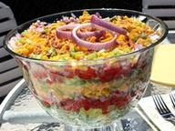

The Perfect HTML Picnic

First, choose your picnic spot
There are loads of lovely picnic spots in Bray.
Why not try Platform 2 on the Dart station?
It’s quiet, sheltered from the wind and there’s lots to see and do when you’ve finished eating.
Or maybe Tesco car-park?
Just stay away from the bottle banks.
Best of all though is Bray Harbour. Anything you don’t eat you can throw to the swans. Like your little brothers and sisters.
Best things for a picnic!
- Dojo Sushi
- Cheese sandwiches
- Crisps
- Jam sandwiches
- Green tea
- Ice cream
Can you think of anything else?
Take a look at these picnic food ideas
Serving the Picnic
This is the hard bit.
You need:
| Item | Where can I buy it? |
|---|---|
| Picnic Blanket | Woodies, Southern Cross Roundabout |
| Plastic plates, bowls, spoons | Woodies, Southern Cross Roundabout |
| Raspberry pies | Bray CoderDojo |
Why not?
- Add your own ideas?
- Edit this.